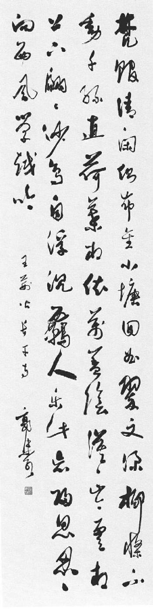

卷一
童年与青年
宋仁宗景祐三年至嘉祐六年
（一〇三六—一〇六一）
第一章·文忠公
第二章·眉 山
第三章·童年与青年
第四章·应 试
第五章·父与子
第一章 文忠公
要了解一个死去已经一千年的人，并不困难。试想，通常要了解与我们同住在一个城市的居民，或是了解一位市长的生活，实在嫌所知不足，要了解一个古人，不是有时反倒容易吗？姑就一端而论，现今仍然在世的人，他的生活尚未完结，一旦遇有危机来临，谁也不知道他会如何行动。醉汉会戒酒自新，教会中的圣人会堕落，牧师会和唱诗班的少女私奔。活着的人总会有好多可能的改变。还有，活着的人总有些秘密，他那些秘密之中最精彩的往往在他死了好久之后才会泄露出来。这就是何以评论与我们自己同时代的人是一件难事，因为他的生活离我们太近了。论一个已然去世的诗人，如苏东坡，情形便不同了。我读过他的札记，他的一千七百首诗，还有他的八百通私人书简。所以，知道一个人或是不知道一个人，与他是否为同代人没有关系，主要的倒是是否对他有同情的了解。归根结底，我们只能知道自己真正了解的人，我们只能完全了解我们真正喜爱的人。我认为我完全知道苏东坡，因为我了解他，我了解他是因为我喜爱他。喜爱哪个诗人，完全是由于一种癖好。我想李白更为崇高，而杜甫更为伟大——在清新、自然、工巧、悲天悯人的情感方面更为伟大。但是不必表示什么歉意，恕我直言，我偏爱的诗人是苏东坡。
宋仁宗坐像
宋仁宗（一〇一〇—一〇六三）在位的四十二年间宋朝进入鼎盛，虽然他对外战争屡战屡败，但在大多数宋人眼里，“仁宗盛治”远过“贞观之治”“开元盛世”。苏东坡就降生在这个让无数文人士大夫最为向往的时代。
在今天看来，我觉得苏东坡伟大的人格比中国其他文人的人格更为鲜明突出，在他的生活和作品里，显露得越发充分。在我头脑里，苏东坡的意象之特别清楚明显，其理由有二。第一，是由于苏东坡本人心智上才华的卓越，深深印在他写的每一行诗上，正如我所看见的他那两幅墨竹上那乌黑的宝墨之光，时至今日，依然闪耀照人，就犹如他蘸笔挥毫是在顷刻之前一样。这是天地间一大奇迹，在莎士比亚的创作上，亦复如此。莎翁诗句的遒健是来自诗人敏感的天性与开阔豁达的胸襟，至今依然清新如故。纵然有后代学者的钻研考证，我们对莎士比亚的生活所知者仍极稀少，可是在他去世四百年之后，由于他作品中感情的力量，我们却知道了他的心灵深处。
第二个理由是，苏东坡的生活资料较为完全，远非其他中国诗人可比。有关他漫长的一生中，多彩多姿政治生涯的那些资料存在于各种史料中，也存在于他自己浩繁的著作中——他的诗文都计算在内，接近百万言，他的札记、他的遗墨、他的私人书信，在当时把他视为最可敬爱的文人而写的大量的闲话漫谈都流传到现在了。在他去世后百年之内，没有一本传记类的书不曾提到这位诗人的。宋儒都长于写日记，尤以司马光、王安石、刘挚、曾布为著名；勤奋的传记作者，如王明清、邵伯温。由于王安石的国家资本新法引起的纠纷，以及一直绵延到苏东坡一生的政坛风波的扰攘不安，作家都保存了那一时代的资料，其中包括对话录，为量甚大。苏东坡并不记日记。他不是记日记那一类型的人，记日记对他恐怕过于失之规律严整而不自然。但是他写札记，遇有游山玩水、思想、人物、处所、事件，他都笔之于书，有的记有日期，有的不记日期。而别人则忙于把他的言行记载下来，爱慕他的人都把他写的书简题跋等精心保存。当时他以杰出的书法家出名，随时有人恳求墨宝，他习惯上是随时题诗，或是书写杂感评论，酒饭之后都随手赠予友人。此等小简偶记，人皆珍藏，传之子孙后代，有时也以高价卖出。这些偶记题跋中，往往有苏东坡精妙之作。如今所保存者，他的书简约有八百通，有名的墨迹题跋约六百件。实际上，是由于苏东坡受到广泛的喜爱，后来才有搜集别的名人书札题跋文字印行的时尚，如黄山谷便是其一。当年成都有一位收藏家，在苏东坡去世之后，立即开始搜集苏东坡的墨迹书简等，刻之于石、拓下拓片出卖，供人做临摹书法之用。有一次，苏东坡因对时事有感而作的诗，立刻有人抄写流传，境内多少文人争相背诵。苏东坡虽然发乎纯良真挚之情，但内容是对政策表示异议，当时正值忠直之士不容于国都之际，当权者之愤怒遂集于他一人之身，情势严重，苏东坡几乎险遭不测。他是不是后悔呢？表面上，在他的贬谪期间，对不够亲密的朋友他说是已然后悔，但是对莫逆之交，他说并无悔意，并且说，倘遇饭中有蝇，仍须吐出。由于他精神上的坦白流露，他也以身列当时高士之首而自伤，在与心地狭窄而位居要津的政客徒然挣扎了一番之后，他被流放到中国域外的蛮荒琼崖海岛，他以坦荡荡之胸怀处之，有几分相信是命运使然。
像苏东坡这样的人，生活中竟有如此的遭遇，他之成为文人窃窃私语的话柄，尊重景仰的话题，尤其是在去世之后，乃是自然之事。若与西方相似之人比较，李白——一个文坛上的流星，在刹那之间壮观惊人的闪耀之后，而自行燃烧消灭，正与雪莱、拜伦相近。杜甫则酷似弥尔顿，既是虔敬的哲人，又是仁厚的长者，学富而文工，以古朴之笔墨写丰厚之情思。苏东坡则始终富有青春活力。以人物论，颇像英国的小说家萨克雷；在政坛上的活动与诗名，则像法国的雨果；他具有的动人的特点，又仿佛英国的约翰生。不知为什么，我们对约翰生的中风，现在还觉得不安，而对弥尔顿的失明则不然。倘若约翰生同时像英国画家庚斯博罗，又像以诗歌批评英国时事的蒲柏，而且也像英国饱受折磨的讽刺文学家斯威夫特，而没有他日渐增强的尖酸，那我们便找到一个像苏东坡的英国人了。苏东坡虽然饱经忧患拂逆，他的人性更趋温和厚道，并没变成尖酸刻薄。今天我们之所以喜爱苏东坡，也是因为他饱受了人生之苦的缘故。
中国有一句谚语，就是说一个人如何要“盖棺论定”。人生如梦，这出戏演得如何，只有在幕落之时才可以下断语。不过有这种区别——人生是如同戏剧，但是在人生的戏剧里，最富有智慧与最精明的伶人，对于下一幕的大事如何，也是茫然无知。但是真正的人生，其中总包含有一种无可避免的性质，只有最好的戏剧才庶乎近之。因此在给过去的人写一本传记时，我们能把一场一场已经完成的戏逐一观看，观看由人内在的气质与外在的环境所引起的必要的发展，这自然是一项重大的方便。在我将《苏东坡传》各章的资料钻研完毕之后，并且了解了为什么他非要有某些作为不可，为什么非要违背他弃官归隐的本意，我觉得自己好像一个中国的星象家，给一个人细批终生，预卜未来，那么清楚，那么明确，事故是那么在命难逃。中国的星象家能把一个人的一生逐年断开，细批流年，把一生每年的推算写在一个折子上，当然卦金要远高出通常的卜卦。但是传记家的马后课却总比星象家的马前课可靠。今天，我们能够洞悉苏东坡穷达多变的一生，看出来那同样的无可避免的情形，但是断然无疑的是，他一生各阶段的吉凶祸福的事故，不管过错是否在他的星宿命运，的确是发生了，应验了。
北宋疆域图
苏东坡半生官场生涯极不得志，颠沛流离，多次贬谪，从礼部尚书直至南谪儋州，横跨北宋大半疆域，愈贬愈远。这也使得苏东坡不得不把对生命的热爱与无奈更多地寄情于山水，寄情于诗词书画。
苏东坡生于宋仁宗景祐三年（一〇三六年），于徽宗建中靖国元年（一一〇一年）逝世——是金人征服北宋的二十五年之前。他是在北宋最好的皇帝（仁宗）年间长大，在一个心地善良但野心勃勃的皇帝（神宗）在位期间做官，在一个十八岁的呆子（哲宗）荣登王位之时遭受贬谪。研究苏东坡的一生，同时也就是研究宋朝因朋党之争而衰微，终于导致国力耗竭、小人当政的历史。凡是读《水浒传》的人都知道当时的政治腐败，善良的百姓都因躲避税吏贪官，相继身入绿林而落草为寇，成了梁山上的英雄好汉了。
在苏东坡的青年时期，朝廷之上有一批淳儒贤臣。到北宋将亡之际，此等贤臣已悉数凋零，或是丢官去位。在朝廷第一次迫害儒臣，排除御史台的守正不阿之士，而由新法宰相王安石安排的若干小人取而代之之时，至少尚有二十余位纯良儒臣，宁愿遭受奸宄之毒手，不肯背弃忠贞正义。等到第二次党争祸起，在愚痴的童子帝王统治之下，忠良之臣大多已经死亡，其余则在流谪中弃世。宋朝国力之削弱，始自实行新法以防“私人资本之剥削”，借此以谋人民之“利益”，而由一个狂妄自信的大臣任其事。对国运为害之烈，再没有如庸妄之辈大权在握、独断独行时之甚的了。身为诗人、哲人之苏东坡，拼命将自己个人之平实常识与经济学家王安石的逻辑对抗。王安石鼓吹的那套道理与中国当时所付出的代价，至今我们还没有弄个清楚。
王安石热衷于自己那套社会改革新法，自然为目的而不择手段，自然会将倡异议之人不惜全予罢黜，一项神圣不可侵犯的主张永远是为害甚大的。因为在一项主张成为不可侵犯之时，要实现此一目的的手段，便难免于残忍。当时情况如此，自然逃不出苏东坡的慧眼，而且兹事体大，也不是他可以付之轻松诙谐的一笑的。他和王安石是狭路相逢了，他俩的冲突决定了苏东坡一生的宦海生涯，也决定了宋朝帝国的命运。
苏东坡和王安石，谁也没活到亲眼看见他们相争的后果，也没看到北方异族之征服中国，不过苏东坡还活到亲眼看见那广事宣传的新政的恶果。他看见了王安石那么深爱的农民必须逃离乡里，并不是在饥馑旱涝的年月，而是在五谷丰登的年月，因为他们没能清还硬逼他们向官家借的款项与利息，因此若胆敢还乡，官吏定要捕之入狱的。苏东坡只能为他们呼天求救，但是却无法一施援手。察访民情的官员奸伪卑劣，以为对此新政新贵之缺点最好装聋作哑，一字不提，因为当权诸公并非不知；而对新政之优点，乃予以粉饰夸张，锦上添花。说漫天之谎而成功（倘若那些谎言漫天大，而且又说个不停），并不是现代人的新发明。那些太监也得弄钱谋生。在这种情形之下，玩法弄权毫不负责之辈就以国运为儿戏，仿佛国破家亡的后果他们是可以逃脱的。苏东坡勉强洁身自全，忍受痛苦，也是无可奈何了。皇帝虽有求治的真诚愿望，但听而不聪，误信人言，终非明主，焉能辞其咎？因为在国家大事上，他所见不明，每每犯错，而苏东坡则料事无误。在实行新政神圣不可侵犯的名义之下，百姓只有在朝廷的高压政治之下辗转呻吟。在疯狂的争权夺利之中，党派的狂热竟凌驾乎国家的利益之上。国家的道德力量、经济力量大为削弱，正如苏东坡所说，在这种情形之下，中国很容易被来自西伯利亚的敌人征服了。群小甘心充当北方强邻的傀儡，名为区域独立，而向金人臣服。在此等情形之下，无怪乎朝廷灭亡，中国不得不迁往江南了。宋室宫阙在北方铁蹄之下化为灰烬之后，历史家在一片焦瓦废墟中漫步之时，不禁放目观望，低头沉思，以历史家的眼光、先知者的身份思索国家百姓遭此劫难的原因，但是时过境迁，为时已迟了。
郭沫若录王安石《长干寺》
书法 郭沫若 现代
王安石（1021—1086），字介甫，号半山，江西临川人，北宋政治家、思想家，也是著名文学家，“唐宋八大家”之一。宋神宗时任参知政事后，推行新法。由于新法触及太多人的既得利益，他在民间形象一直不佳。
梵馆清闲侧布金，小塘回曲翠文深。柳条不动千丝直，荷叶相依万盖阴。
漠漠岑云相上下，翩翩沙鸟自浮沈。羇人乐此忘归思，忍向西风学越吟。
苏东坡去世一年之后，在当权的群小尚未把长江以北拱手奉送与来自穷沙大漠的他们那异国的君王，一件历史上的大事发生了。那就是有名的元祐党人碑的建立，也是宋朝朋党之争的一个总结。元祐是宋哲宗的年号（一〇八六—一〇九三），在这些年间，苏东坡的蜀党当权。元祐党人碑是哲宗元祐年间当政的三百零九人的黑名单，以苏东坡为首（作者误，碑上为首者为司马光——编者注）。碑上有奉圣旨此三百零九人及其子孙永远不得为官。皇家子女亦不得与此名单上诸臣之后代通婚姻，倘若已经订婚，也要奉旨取消，与此同样的石碑要分别在全国各县树立。直到今天，中国有些山顶上还留有此种石碑。这是将反对党一网打尽、斩尽杀绝的办法，也是立碑的群小蓄意使那些反对党人千年万载永受羞辱的办法。自从中国因王安石变法使社会衰乱，朝纲败坏，把中国北方拱手让与金人之后，元祐党人碑给人的观感和立碑的那群小人的想法可就大为不同了。随后一百多年间，碑上人的子孙都以碑上有他们祖先的名字向人夸耀。这就是元祐党人碑在历史上出名的缘故。实际上，这些碑上的祖先之中，有的并不配享有此种荣耀，因为在立碑时要把反对党赶尽杀绝，那群小人便把自己个人的仇敌的名字也擅自列入了，所以此一黑名单上的人是好坏兼而有之的。
在徽宗崇宁五年（一一〇六年）正月，出乎神意，天空出现彗星，在文德殿东墙上的元祐党人碑突遭电击，破而为二。此是上天降怒，毫无疑问。徽宗大惧，但因怕宰相反对，使人在深夜时分偷偷儿把端礼门的党人碑毁坏。宰相发现此事，十分懊恼，但是却大言不惭的说道：“此碑可毁，但碑上人名则当永记不忘！”现在我们知道，他是如愿以偿了。
雷电击毁石碑一事，使苏东坡身后的名气越来越大。他死后的前十年之间，凡石碑上刻有苏东坡的诗文或他的字的都奉令销毁，他的著作严禁印行，他在世时一切官衔也全予剥夺。当时有作家在杂记中曾记有如下文句：“东坡诗文，落笔辄为人传诵。……崇宁大观间，海外诗盛行。……是时朝廷虽尝禁止，赏钱增至八十万，禁愈严而传愈多，往往以多相夸。士大夫不能诵坡诗者，便自觉气索，而人或谓之不韵。”
雷击石碑后五年，一个道士向徽宗奏称，曾见苏东坡的灵魂在玉皇大帝驾前为文曲星，掌诗文。徽宗越发害怕，急将苏东坡在世时最高之官爵恢复，后来另封高位，为苏东坡在世时所未有。在徽宗政和七年（一一一七年）以前，皇家已经开始搜集苏东坡的手稿，悬价每一篇赏制钱五万文。太监梁师成则付制钱三十万文购买颍州桥上雕刻的苏东坡的碑文（早已经被人小心翼翼地隐藏起来），这笔钱在当时的生活来说，是够高的价钱。另外有人出五万制钱购买一个学者书斋上苏东坡题匾的三个字。这时苏东坡的诗文字画在交易上极为活跃，不久之后，这些宝贵的手稿不是进入皇宫成了御览之宝，便成了富有的收藏家手中的珍品。后来金人攻下京师，特别索取苏东坡和司马光的书画，作为战利品的一部分，因为苏东坡的名气甚至在世时已经传到了塞外异族之邦。苏东坡的手稿书画中的精品，有一部分敌人用车装运到塞外，同时徽、钦二帝也随车北掳，竟至客死番邦（当时徽宗已让位于儿子钦宗）。苏东坡遗留下的文物未遭毁灭者也由收藏家运到了江南，始得以保存于天地之间。
《元祐党籍碑》（引自《图说中国通史·黄河饮马》第12页）
石碑 1211年 现存于广西融水的《元祐党籍碑》，亦称《元祐党人碑》、《元祐奸党碑》。宋徽宗即位后，听蔡京之言，将哲宗元祐中任职、曾对王安石新法不满的大臣数百人列为“元祐奸党”，并将其名单刻石，颁布全国。
苏东坡业已去世，有关时政的感情冲动的争斗风暴也已过去，南宋的高宗皇帝坐在新都杭州，开始阅读苏东坡的遗著，尤其是他那有关国事的文章，越读越敬佩他谋国之忠，越敬佩他的至刚大勇。为了追念苏东坡，把苏东坡的一个孙子苏符赐封高官。所有这些举动都使苏东坡身后的名气地位达到巅峰。到孝宗乾道六年（一一七〇年），赐他谥号文忠公，又赐太师官阶（宋史中说是宋高宗所封——编者注）。皇帝对他的天才的褒扬，至今仍不失为最好的赞词。到今天，各种版本的苏文忠公全集上的卷首都印有皇帝的圣旨和皇帝钦赐的序言。兹将封他为太师的那道圣旨转录于后（《四库全书·苏轼集》中说圣旨出自宋高宗——编者注）：
朕承绝学于百圣之后，探微言于六籍之中。将兴起于斯文，爰缅怀于故老。虽仪刑之莫觌，尚简策之可求。揭为儒者之宗，用锡帝师之宠。故礼部尚书、端明殿学士、赠资政殿学士、谥文忠苏轼，养其气以刚大，尊所闻而高明。博观载籍之传，几海涵而地负；远追正始之作，殆玉振而金声。知言自况于孟轲，论事肯卑于陆贽？方嘉祐全盛，尝膺特起之招；至熙宁纷更，乃陈长治之策。叹异人之间出，惊谗口之中伤。放浪岭海，而如在朝廷；斟酌古今，而若斡造化。不可夺者，峣然之节；莫之致者，自然之名。经纶不究于生前，议论常公于身后。人传元祐之学，家有眉山之书。朕三复遗编，久钦高躅。王佐之才可大用，恨不同时；君子之道暗而章，是以论世。傥九原之可作，庶千载以闻风。惟而英爽之灵，服我衮衣之命。可特赠太师。馀如故。
由此观之，苏东坡在中国历史上的特殊地位一则是由于他对自己的主张原则始终坚定而不移，二则是由于他诗文书画艺术上的卓绝之美。他的人品道德构成了他名气的骨干，他的风格文章之美则构成了他精神之美的骨肉。我不相信我们会从内心爱慕一个品格低劣无耻的作家，他的文字再富有才华，也终归无用。孝宗赐予《苏东坡集》的序言就盛赞他浩然正气的伟大，这种正气就使他的作品不同于那些华丽柔靡之作，并且使他的名气屹立如山，不可动摇。
但是，现在我们不要忘记苏东坡主要是个诗人、作家。他当然是以此得名的。他的诗文中有一种特质，实在难以言喻，经过翻译成另一种文字后，当然更难以捉摸。杰作之所以成为杰作，就因为历代的读者都认为“好作品”就是那个样子。归根结底来说，文学上万古不朽的美名还是在于文学所给予读者的快乐上，但谁又能说究竟怎样才可以取悦读者呢？使文学作品有别于一般作品的，就在于在精神上取悦于人的声韵、感情、风格而已。杰作之能使历代人人爱读，而不为短暂的文学风尚所掩没，甚至历久而弥新，必然具有一种我们称之为发乎肺腑的“真纯”，就犹如宝石之不怕试验，真金之不怕火炼。苏东坡写信给谢民师时说：“文章如精金美玉，市有定价，非人所能以口舌定贵贱也。”

《赤壁图》
中国画 仇英 明
苏东坡在诗、文、词、书、画等方面均取得了登峰造极的成就，是中国历史上少有的文学和艺术天才。他的为人和才情也引得无数后人为之倾倒，这幅《赤壁图》就是明代大画家臆想中的苏东坡游赤壁的情景。
可是，使作品经久而不失其魔力的“真纯”又为何物？苏东坡对写作与风格所表示的意见最为清楚。他说做文章“大略如行云流水，初无定质，但常行于所当行，常止于所不可不止。文理自然，姿态横生。孔子曰：‘言之不文，行而不远。’又曰：‘辞达而已矣。’夫言止于达意，即疑若不文，是大不然。求物之妙，如系风捕影，能使是物了然于心者，盖千万人而不一遇也，而况能使了然于口与手者乎？是之谓辞达。辞至于能达，则文不可胜用矣。扬雄好为艰深之词，以文浅易之说。若正言之，则人人知之矣，此正所谓雕虫篆刻者”。在此为风格做解释，苏东坡很巧妙地描写了他自己的为文之道，其行止如“行云流水”，他是把修辞作文的秘诀弃之而不顾的。何时行、何时止是无规矩法则可言的。只要作者的情思美妙他能真实精确地表达出来，表达得够好，迷人之处与独特之美便自然而生，并不是在文外附着的身外之物。果能表现精妙而能得心应手，则文章的简洁、自然、轻灵、飘逸便能不求而自至，此处所谓文章的简洁、自然、轻灵、飘逸，也就是上好风格的秘诀。文章具有此等特性，文章便不至于索然无味，而我们也就不怕没有好文章读了。不管怎么说，能使读者快乐的确是苏东坡作品的一个特点。苏东坡最快乐就是写作之时。一天，苏东坡对朋友说：“我一生之至乐在执笔为文之时，心中错综复杂之情思，我笔皆可畅达之。我自谓人生之乐，未有过于此者也。”苏东坡的文字给他同时代人的感受亦复如此。欧阳修说每逢他收到苏东坡新写的一篇文章，他就欢乐终日。宋神宗的一位侍臣告诉人说，每逢皇帝陛下举箸不食时，必然是正在看苏东坡的文章。即便是苏东坡贬谪在外时，只要有他的一首新作的诗到达宫中，神宗皇帝必当诸大臣之面感叹赞美之。但是皇上对苏东坡的感叹赞美就正使某些大臣害怕，必使神宗在世一日，使苏东坡一直流放在外，不能回朝。
有一次，苏东坡写文章力辩文章本身使人感到快乐的力量，就是文学本身的报酬。他晚年有时曾想抛弃笔墨根本不再写作，因为他一辈子都是以笔买祸。他在给刘沔的回信中说：“轼穷困，本坐文字，盖愿刳形去智而不可得者。然幼子过文益奇。在海外孤寂无聊，过时出一篇见娱，则为数日喜，寝食有味。以此知文章如金玉珠贝，未易鄙弃也。”作者自由创作时，能自得其乐，读者阅读时，也觉愉悦欢喜，文学存在人间，也就大有道理了。
苏东坡天赋的才气特别丰厚，可以说是冲破任何界限而不知其所止。他写诗永远清新，不像王安石的诗偶尔才达到完美的境界。苏诗无须乎获得那样完美。别的诗人作诗限于诗的辞藻，要选用一般传统的诗的题材，而苏东坡写诗不受限制，即便浴池内按摩筋骨亦可入诗，俚语俗句用于诗中，亦可听来入妙。往往是他在作诗时所能独到而别的诗人之所不能处，才使他的同道叹服。他对文学上主要的贡献是在从前专限于描写闺怨相思的词上开扩其领域，可以谈道谈禅，谈人生哲理，而且在冒极大之危险在几乎不可能的情形之下成功了。因为他经常必须在饭后当众作诗，通常他比别人写起来快，也写得好。他的思想比别人清新，类比典故也比别人用得恰当。有一次在黄州为他送行的筵席上，一个歌妓走到他面前，求他在她的披肩上题诗，但是苏东坡从来没听说有此一歌妓。立即吩咐她研墨，拿笔开头写道：
东坡七岁黄州住，
何事无言及李琪。
苏东坡手迹
书法 苏东坡 1191年
北宋年间高僧辩才在寺中静修，发誓不出山门。某日苏东坡拜访完辩才后，辩才送东坡出寺。两人谈兴犹浓，不知不觉过了寺前的归隐桥。虽然破坏了辩才的规矩，辩才却笑以杜诗道：“与子成二老，来往亦风流。”苏东坡也为此赋诗，以东晋陶渊明访友的故事比拟两人的友谊。
至此停下，接着与朋友说话。在座的人以为这是很平淡无味的起头，而且仅仅两句，全诗尚未完稿。东坡继续吃饭谈笑。李琪上前求他把诗写完。东坡又拿起笔来，将此首七绝的后两句一挥而就：
恰似西川杜工部，
海棠虽好不留诗。
此诗音韵谐和，犹如一粒小宝石，有轻灵自然之美。对李琪的恭维恰到好处，因而使此一黄州歌妓的芳名也永垂不朽了。中国诗的韵律很严，在用典故时需要高度的技巧，在和别人的诗时，也要用同样的字，押同样的韵。不知何故，苏诗的韵总比别人的用韵自然，并且他的用典经仔细看来，含义更深。在写散文时，他笔力所及，至为广阔，自庄严纯正的古文风格至轻松曼妙、扣人心弦的小品，无所不能，各臻其妙。东坡之以大家称，不无故也。
《竹》（引自《图说中国通史·黄河饮马》第93页）
中国画 文同 宋 中国台北故宫博物院藏
苏东坡在绘画方面，画竹师文同（即文与可），但文更加简劲，且具掀舞之势。苏东坡的论画影响更为深远，主张画外有情，反对形似，反对程式束缚，提倡“诗画本一律，天工与清新”，并明确提出“文人画”的概念，为其后文人画的发展奠定了理论基础。
因此之故，苏东坡在中国是主要的诗人和散文家，而且他也是第一流的画家、书家，善谈吐，游踪甚广。天生聪慧，对佛理一触即通，因此常与僧人往还，他也是第一个将佛理入诗的。他曾猜测月亮上的黑斑是山的阴影。他在中国绘画上创出了新门派，那就是文人画，而使中国艺术增加了独特的优点。他也曾开凿湖泊河道，治水筑堤。他自己寻找草药，在中国医学上他也是公认的权威。他也涉猎炼丹术，直到临去世之前，他还对寻求长生不死之药极感兴趣。他曾对神恳求，与妖魔争辩，而且有时他居然获胜。他想攫取宇宙间的奥秘，不幸未竟全功，只成功了一半，乃一笑而逝。
倘若不嫌“民主”一词今日用得太俗滥的话，我们可以说苏东坡是一个极讲民主精神的人，因为他与各行各业都有来往，帝王、诗人、公卿、隐士、药师、酒馆主人、不识字的农妇。他的至交是诗僧、无名的道士，还有比他更贫穷的人。他也喜爱官宦的荣耀，可是每当他混迹人群之中而无人认识他时，他却最为快乐。他为杭州、广州兴办水利，建立孤儿院与医院，创监狱医师制度，严禁杀婴。在王安石新法的社会改革所留下的恶果遗患之中，他只手全力从事救济饥荒，不惜与掣肘刁难的官场抗争。当时似乎是只有他一个人关心那千里荒旱，流离饿孵。他一直为百姓而抗拒朝廷，为宽免贫民的欠债而向朝廷恳求，必至成功而后已。他只求独行其是，一切付之悠悠。今天我们确实可以说，他是具有现代精神的古人。